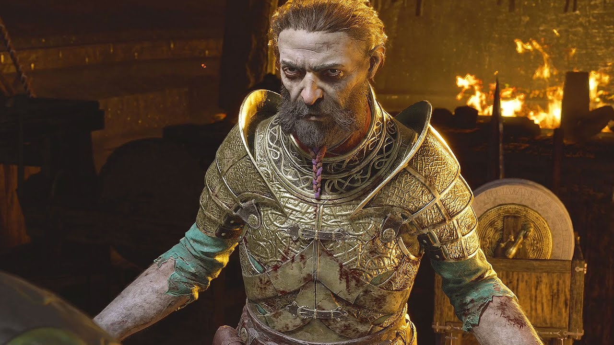

Síndri
 Sindri junto com seu irmão Brok, começaram como ferreiros relativamente desconhecidos, que estavam ansiosos para fazer um nome para si mesmos no mundo. Para alcançar a fama que desejavam, Sindri teve a ideia de forjar uma arma para o Aesir Thunder God Thor; um martelo relâmpago. Ambos os anões começaram a fazer o martelo, com Sindri se superando notavelmente em um esforço para impressionar Odin. Mais tarde, eles apresentaram a arma a Thor, que a aceitou ansiosamente, ganhando o respeito e a fama que desejavam nos Nove Reinos.
No entanto, depois de ver Thor usando o martelo para causar destruição e devastação ao longo de trinta anos,
Sindri e Brok sofreram um profundo sentimento de culpa. Isso causou uma cisão entre os dois, com Brok culpando abertamente seu irmão por ter se superado na criação do martelo para impressionar o Rei dos Aesir.
Sindri, entretanto, disse a Brok que eles tinham o dever de restaurar o equilíbrio dos reinos e perguntou se seu irmão iria se juntar a ele no cumprimento desse dever.
Nas duas semanas seguintes, os irmãos começaram a forjar o Machado Leviatã em um esforço para criar um rival para o Mjolnir. No entanto,
no décimo quinto dia de forjamento, quando os irmãos se aproximavam do fim de seu trabalho, uma aranha rastejou pela perna de Brok enquanto ele trabalhava na forja e o mordeu na coxa, como vingança por Brok ter matado um de seus parentes antes, esmagando-o sob seu bota.
Sindri correu para pegar seu irmão enquanto Brok morria rapidamente com o potente veneno liberado pela mordida.
Sabendo que a única maneira de trazer seu irmão de volta à vida era viajar para o reino de Alfheim e impedir que seus irmãos afundassem no Lago das Almas em Helheim, onde estaria perdido para sempre, Sindri rapidamente colocou o corpo de Brok em um carrinho e viajou para o reino dos Elfos.
Chegando ao Lago das Almas com seu irmão a reboque,
Sindri removeu uma das luvas de forja de seu irmão e a colocou sobre sua própria mão, algo que ele sabia que era necessário se quisesse impedir que seu irmão morresse permanentemente, já que as luvas de forja dos anões eram sagradas. Depois de observar que os anões pertenciam ao subsolo e não à água, Sindri mergulhou na água negra do Lago das Almas,
notando as almas submersas começando a escurecer conforme desciam mais fundo no lago em sua jornada final para Helheim. Sentindo-se atraído por um fio azul claro, Sindri começou a nadar em direção a ele. No entanto, uma mão se ergueu das profundezas abaixo dele e agarrou seu tornozelo. Girando ao redor,
Sindri podia ver centenas de cadáveres em decomposição enterrados nas areias do fundo do lago com os braços se debatendo na água, com um deles agarrando seu tornozelo na tentativa de puxá-lo para eles. Desembainhando uma adaga, Sindri rapidamente cortou o braço ossudo em decomposição segurando seu tornozelo e chutou o cadáver no rosto,
impulsionando-o para a frente em direção ao fio azul-claro. Estendendo a mão enluvada, Sindri agarrou o fio, que enviou uma explosão de luz azul, que jogou de volta os mortos invasores no fundo do lago, permitindo que Sindri escapasse para a superfície.
Depois que Sindri emergiu do lago, ele rastejou até a margem e começou a vomitar um líquido preto e espesso de seus pulmões. O anão notou que sentia um frio, uma coceira espalhada por seu corpo, sentindo como se mil minúsculos insetos infestassem sua pele e os mortos ainda o arranhassem.
Isso fez com que Sindri coçasse profundamente sua pele repetidamente antes de desmaiar. Acordando algum tempo depois, Sindri se sentiu atordoado, mas convocou a energia para rastejar até o carrinho contendo o agora doentio corpo azul acinzentado de Brok. Removendo a luva de ferreiro de seu irmão, Sindri colocou as mãos no peito de Brok e pôde sentir o pulso fraco de um batimento cardíaco lento.
. Sabendo que havia salvado seu irmão, Sindri decidiu não contar a Brok sobre o que havia acontecido quando ele finalmente acordou, observando que a jornada que ele havia feito seria seu fardo, não seus irmãos.
No entanto, Sindri foi visivelmente afetado pelos eventos, que mais tarde foi notado por Brok depois que ele acordou,
como uma contração persistente no rosto de seu irmão.
Depois de finalmente terminar seu trabalho no Machado Leviatã, Sindri e Brok foram procurados por Laufey, o Justo. Sabendo que ela era a última Guardiã de Jotnar deixada em Midgard e boa pessoa, eles a presentearam com o machado em um esforço para restaurar o equilíbrio dos reinos.
No entanto, apesar de tudo isso,
a brecha entre os dois irmãos em relação à culpa pela destruição causada por Thor com seu martelo não foi resolvida e, eventualmente, os dois decidiram que não poderiam mais trabalhar juntos, cada um pegando metade de sua marca de ferraria original e indo para seu caminhos separados.